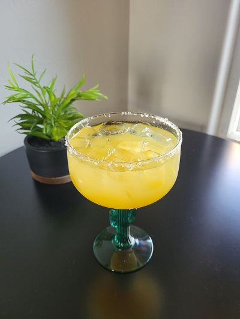

Description
Basic margarita with fresh lime and optional Spicy and Cadillac variations.
Ingredients
- 2 oz - fresh squeezed lime juice
- 3 oz - Tequila
- 1.5 oz - Triple Sec (Opt: Use Fresh Sqeezed Orange Juice)
- For Cadillac: splash of Grand Marnier
- Opt. Salt for Rim
- Opt. Spicy: 1-5 Slices Jalepeno based on spicy level
Directions
- For Spicy, muddle Jalepno slices, add Tequila, and let sit for at least a few minutes while making the rest of hte drink
- Squeeze lime
- If salted rim use lime to wet rim and spin glass in salt
- Fill glass with ice.
- Add Tequila and strained lime juice.
- For Cadillac add splash of Grand Marnier.
Return to Top
Return to Main